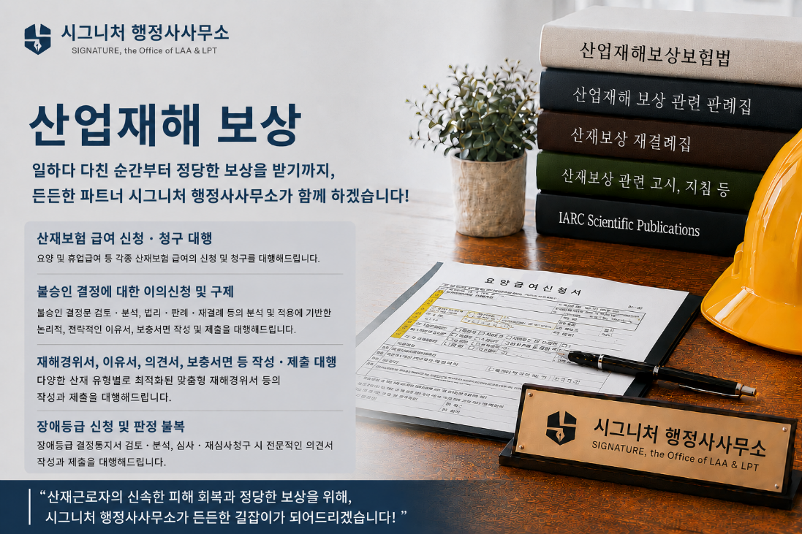
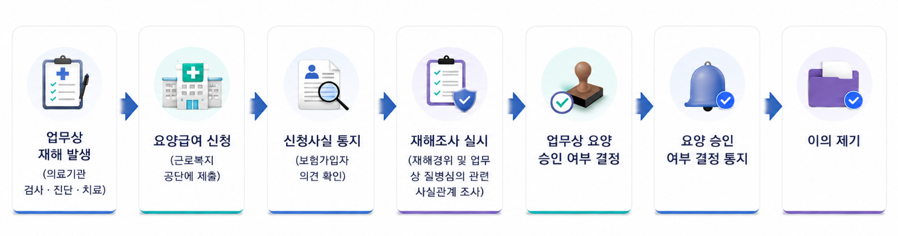
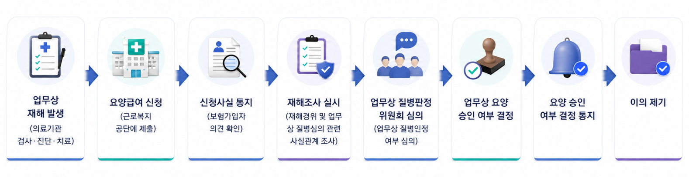
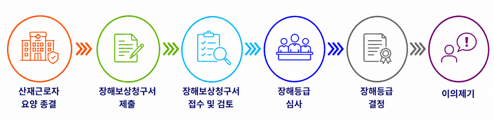

노동·산재보상
산업재해(산재) 보상의 개요
산재보상이란, 근로자의 업무상 재해를 신속·공정하게 보상하고, 재해근로자의 치료, 재활 및 사회복귀를 촉진하는 것을 목적으로 하는 산업재해보상보험법(산재보험법)에 의거하여 근로자가 업무상의 사유로 인해 부상, 질병, 장해를 입거나 사망한 경우, 국가가 사회보험 제도를 통해 신속하고 공정하게 치료와 보상 등을 하는 제도입니다.
2023년 7월 1일 노무제공자의 전속성 요건의 폐지 이후, 2025년 기준으로 산재보험 적용 근로자의 수는 약 2,275만 명에 달하고 있으며, 이에 따라 산재보상 관련 신청 및 청구 등 산재보상 권익구제 업무의 수요가 매년 증가하고 있는 추세입니다.

산재(업무상 재해)의 유형
업무상 재해란, 산재보험법 제5조 제1항에 명시된 바와 같이 업무상의 사유로 인하여 발생한 근로자의 부상·질병·장해 또는 사망을 의미하며, 그 유형은 크게 다음의 3가지로 구분됩니다.
- • 업무상 사고: 업무수행 중 관련 법령에서 정한 일정한 원인에 의해 발생한 사고
- • 업무상 질병: 건강상 장애 유발 위험요인을 취급 또는 그 노출, 업무상 부상, 업무상 정신적 스트레스로 인한 질병으로서, 근골격계 질환, 뇌심혈관계 질환, 업무상 정신질환 등
- • 출퇴근 재해: 주거와 취업장소 사이를 출퇴근하는 중에 발생한 사고
업무상 재해의 판단 기준
산재보험법에는 업무상 재해란, 업무수행 중 업무상의 사유에 기인하여 발생한 재해라고 규정하고 있으며, 업무상 재해의 여부를 판단하는데 있어 다음의 2가지 요건을 그 판단 기준으로 하고 있습니다.
- • 업무 수행성: 근로자가 사업주와 근로계약을 체결하고 사업주의 지배·관리 하에서 업무 수행 중에 산재가 발생하였는지의 여부
- • 업무 기인성: 업무와 발생한 업무상 재해 사이에 상당인과관계가 존재하는지의 여부
산재보험 급여의 종류
- • 요양급여: 진료·약제비, 간호·간병비, 입원·재활치료비, 이송비 등 치료와 관련한 보험급여
- • 간병급여: 치유 후 의학적으로 간병이 필요한 경우 지급하는 보험급여
- • 휴업급여: 요양기간 중 일하지 못한 기간에 대한 보험급여
- • 상병보상연금: 2년 이상의 요양기간과 중증요양상태등급인 경우 휴업급여 대신 지급되는 보험급여
- • 직업재활급여: 산재장애인을 원직장에 복귀시켜 고용을 유지하는 사업주에게 지원금으로 지급되거나 실업상태인 산재장애인을 직업훈련 비용과 수당으로 지급되는 보험급여
- • 장해급여: 치유 후 장해가 남은 경우 등급에 따른 보험급여
- • 진폐보상연금: 암석, 금속, 유리섬유 등의 취급으로 인한 업무상 질병인 진폐에 걸린 근로자에게 지급하는 연금
- • 유족급여: 업무상의 사유로 인해 사망한 경우 유족에게 지급하는 보험급여
- • 장례비: 장례를 지낸 유족에게 지급하는 보험급여
업무상 재해 판정 절차
산재보상에서 업무상 재해의 판정 절차는 일반적으로 아래의 2가지 경우로 구분되어 진행됩니다.
• 업무상 사고의 경우:

• 업무상 질병의 경우:

산재 장해 판정 절차
산재로 인해 장해가 남은 경우, 장해급여를 받기 위해 산재 장해판정 절차를 거치게 되는데 일반적으로 아래와 같은 절차를 거치게 됩니다.

산재보상 관련 컨설팅 서비스
산재보상의 최초 신청 시 뿐만 아니라 불승인에 대한 불복에 있어서, 업무와 발생한 산재 사이의 상당인과관계를 법리적 근거, 객관적 사실과 그 사실에 근거한 의학적 소견 등에 기반하여 얼마나 논리적이면서 설득력 있게 입증하느냐에 따라 그 성패가 좌우됩니다.
특히, 재해경위서, (재)심사청구서, 이유서, 의견서, 보충서면 등의 작성 시에는 다양한 산재 유형별로 업무상 재해임을 인정받을 수 있는 상당인과관계의 입증을 위하여 관련 법령상 근거와 법리의 분석 및 적용, 관련 대법원 판례와 재결례의 분석 및 적용, 공신력이 있는 기관의 객관적이고 역학적인 데이터 등에 기반한 종합적이고 전략적인 접근이 필수적입니다.
“시그니처 행정사사무소는 복잡하고 막막한 산재보상의 처음부터 끝까지, 산재피해 근로자의 든든한 조력자가 되어드리겠습니다!”
시그니처 행정사사무소의 산재보상 관련 컨설팅 서비스는 아래와 같습니다.
-
•
신속승인(간소화) 절차 대행
일정 직종에서 일정 근무기간 이상 특정 신체부위에 부담을 주는 업무(신체부담 업무)를 수행 중 빈번하게 발생하는 근골격계 질병에 대해 업무관련성이 강하다고 평가하여 업무상질병판정 위원회의 심의 등 절차를 간소화함으로써 처리기간을 대폭 단축하여 업무상 산재 여부를 신속히 판단하는 절차
-
•
사례별 최적의 맞춤형 재해경위서 작성 및 제출 대행
✓ 출퇴근 중 사고✓ 업무시간 중 사고✓ 휴게시간 중 사고✓ 행사 중 사고✓ 제3자의 가해행위에 의한 사고 등✓ 업무상 질병 - 근골격계 질환✓ 업무상 질병 - 뇌심혈관계 질환✓ 업무상 질병 - 신경정신계 질환(직장내 괴롭힘, 자해행위(사망) 등)✓ 업무상 질병 - 직업성 암 등 기타 -
•
공단의 결정 등에 대한 불복절차 대행
- - 1단계: 심사 청구(근로복지공단의 산재심사위원회)
- - 2단계: 재심사 청구(고용노동부의 산업재해보상보험재심사위원회)
“산재근로자의 신속한 피해 회복과 정당한 보상을 위해,
시그니처 행정사사무소가 든든한 길잡이가 되어드리겠습니다!”
지금 바로 상담 신청하세요!